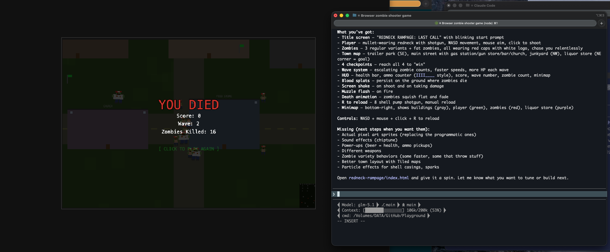
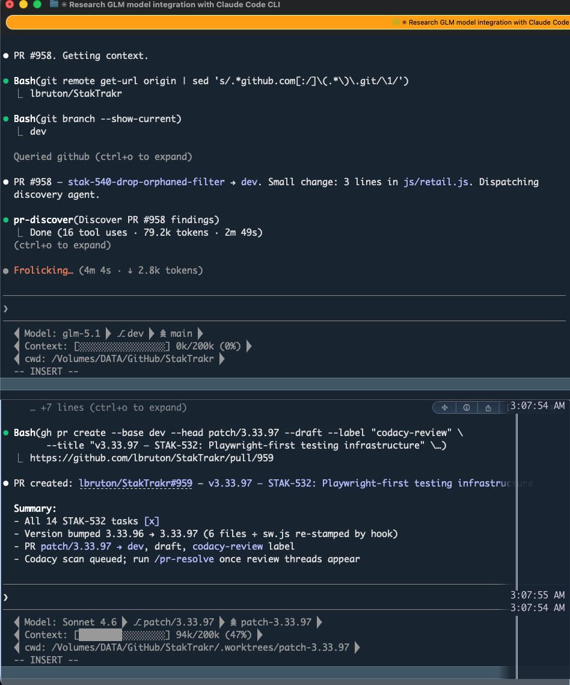

The Idea
Claude Code Is Model-Agnostic
Claude Code talks to an API endpoint. Override ANTHROPIC_BASE_URL and the model resolves to whatever that endpoint serves. Your skills, MCP servers, hooks, memory, and CLAUDE.md all load normally — the model is just the brain, everything else is the same.
Three providers now offer native Anthropic-compatible APIs — no proxy, no translation layer, no LiteLLM:
GLM-5.1 — 204K context, 128K max output, reasoning-capable. $50/quarter for 3x Pro plan.
DeepSeek V3.2 — 102K context. Pay-as-you-go at $0.28/M output tokens. 95% cheaper than Claude.
Kimi K2.5 — 262K context. Pay-as-you-go at $2.50/M output. Agent Swarm capability.
Your terminal — same machine, same directory, different backends
┌─────────────┐ ┌─────────────┐ ┌─────────────┐ ┌─────────────┐
│ claude │ │ claude-glm │ │ claude-ds │ │ claude-kimi │
│ Opus 4.6 │ │ GLM-5.1 │ │ DeepSeek │ │ Kimi K2.5 │
│ 1M context │ │ 204K │ │ 102K (bare) │ │ 262K │
│ $200/mo │ │ ~$17/mo │ │ ~$0.28/M │ │ ~$2.50/M │
└──────┬──────┘ └──────┬──────┘ └──────┬──────┘ └──────┬──────┘
└──────────────┴──────────────┴──────────────┘
same skills, MCP, hooks, CLAUDE.md
Setup
Shell Aliases — Two Minutes to Multi-Model
Create a file that defines aliases for each backend. Source it from your shell profile so it survives reboots. Each alias launches the same claude binary with different environment variables.
# GLM (z.ai) — 3x Pro plan
alias claude-glm='ANTHROPIC_BASE_URL="https://api.z.ai/api/anthropic" \
ANTHROPIC_AUTH_TOKEN="your-glm-api-key" \
ANTHROPIC_DEFAULT_OPUS_MODEL="glm-5.1" \
ANTHROPIC_DEFAULT_SONNET_MODEL="glm-5.1" \
ANTHROPIC_DEFAULT_HAIKU_MODEL="glm-4.5-air" \
ANTHROPIC_DEFAULT_OPUS_MODEL_NAME="GLM-5.1 (Opus slot)" \
ANTHROPIC_DEFAULT_SONNET_MODEL_NAME="GLM-5.1 (Sonnet slot)" \
ANTHROPIC_DEFAULT_HAIKU_MODEL_NAME="GLM-4.5-Air (Haiku slot)" \
ANTHROPIC_DEFAULT_OPUS_MODEL_SUPPORTED_CAPABILITIES="effort,thinking" \
ANTHROPIC_DEFAULT_SONNET_MODEL_SUPPORTED_CAPABILITIES="effort,thinking" \
API_TIMEOUT_MS="3000000" \
claude'
# DeepSeek — pay-as-you-go, 102K context (--bare required)
alias claude-ds='ANTHROPIC_BASE_URL="https://api.deepseek.com/anthropic" \
ANTHROPIC_AUTH_TOKEN="your-deepseek-api-key" \
ANTHROPIC_DEFAULT_OPUS_MODEL="deepseek-chat" \
ANTHROPIC_DEFAULT_SONNET_MODEL="deepseek-chat" \
ANTHROPIC_DEFAULT_HAIKU_MODEL="deepseek-chat" \
ANTHROPIC_DEFAULT_OPUS_MODEL_NAME="DeepSeek V3.2 (Opus slot)" \
ANTHROPIC_DEFAULT_SONNET_MODEL_NAME="DeepSeek V3.2 (Sonnet slot)" \
ANTHROPIC_DEFAULT_HAIKU_MODEL_NAME="DeepSeek V3.2 (Haiku slot)" \
API_TIMEOUT_MS="600000" \
claude --bare'
# Load AI aliases
[ -f "$HOME/.ai-aliases.zsh" ] && source "$HOME/.ai-aliases.zsh"
Authentication precedence
Claude Code checks credentials in this order: ANTHROPIC_AUTH_TOKEN > ANTHROPIC_API_KEY > OAuth login. Use ANTHROPIC_AUTH_TOKEN in your aliases — it takes priority over the saved OAuth token from your MAX subscription, avoiding the "auth conflict" warning.
Shell environment variables always override settings.json. No config file conflicts between backends — your regular claude command keeps using MAX, and each alias overrides cleanly.
First launch
The first time you run a backend alias, Claude Code may ask "Do you want to use this API key?" — say Yes. The choice is remembered for that session. If you see an auth conflict warning, it's safe to proceed — the API key takes precedence.
Comparison
The Model Matrix
Each backend has different strengths, context limits, and cost profiles. Pick the right one for the task.
| Alias | Model | Context | Output | Cost | Best for |
|---|
claude | Opus 4.6 | 1M | ~32K | $200/mo | Everything — primary driver |
claude-glm | GLM-5.1 | 204K | 128K | ~$17/mo | Full interactive sessions, research, prototyping |
claude-ds | DeepSeek V3.2 | 102K | ~8K | ~$0.28/M | Batch review via -p pipe mode |
claude-kimi | Kimi K2.5 | 262K | TBD | ~$2.50/M | Evaluation, large-context tasks |
Context limits matter
A fully-loaded Claude Code session (CLAUDE.md + skills + MCP server prompts + hooks + memory) consumes ~82K tokens of system prompt. DeepSeek's 102K context can't fit that, which is why the
claude-ds alias includes
--bare (strips plugins, skills, and MCP servers). GLM and Kimi have enough headroom for the full stack.
Pipe Mode
The -p Killer Feature
Non-interactive mode (claude -p) works with any backend alias. Pipe a task in, get results out. This is where the cost savings compound — cheap models doing batch work without burning your MAX tokens.
# Code review on DeepSeek tokens (~$0.28/M output)
git diff | claude-ds-p "Review this diff for bugs and security issues"
# File analysis on GLM tokens (~$17/mo flat)
claude-glm -p "Explain the architecture of src/auth/" \
--allowedTools "Read,Grep,Glob"
# Structured output for CI pipelines
claude-ds-p "List all TODO comments in this repo" \
--output-format json \
--allowedTools "Grep"
Defining a pipe function
For backends that need --bare, define a shell function so the flags are baked in:
# DeepSeek pipe mode — fire-and-forget batch worker
claude-ds-p() {
ANTHROPIC_BASE_URL="https://api.deepseek.com/anthropic" \
ANTHROPIC_AUTH_TOKEN="your-deepseek-api-key" \
ANTHROPIC_DEFAULT_OPUS_MODEL="deepseek-chat" \
ANTHROPIC_DEFAULT_SONNET_MODEL="deepseek-chat" \
ANTHROPIC_DEFAULT_HAIKU_MODEL="deepseek-chat" \
API_TIMEOUT_MS="600000" \
claude --bare -p "$@"
}
Cross-backend delegation from an active session
Inside any Claude Code session, you can shell out to another backend using the ! prefix:
# From a GLM session, delegate a complex task to Opus
! claude -p "Analyze the security of src/auth.ts" --allowedTools "Read,Grep"
# From a Claude MAX session, get a cheap DeepSeek review
! git diff | claude-ds-p "Review for OWASP top 10 issues"
Case Study
GLM-5.1 Builds a Game in One Shot
The first task given to GLM-5.1 through Claude Code was a natural language game concept — a top-down zombie survival shooter inspired by Alien Swarm and Shaun of the Dead. The prompt was a casual brain dump, not a structured spec.
6
sentences in the prompt

PLAY IT →
What GLM produced
- Phaser 3 with arcade physics, zero-gravity top-down movement
- Procedural pixel art sprites generated at runtime — no external assets
- Wave-based zombie AI with 4 variants and escalating difficulty
- Collision detection, health bar, ammo counter, score tracker
- Real-time minimap with zombie positions
- Blood splats, screen shake, muzzle flash, death animations
- 4 checkpoints across a procedurally generated town map
- Complete README with 5-phase roadmap
All MCP servers (code search, memory, file operations) worked correctly throughout the session. GLM used context7 to look up Phaser 3 documentation, Read/Write/Edit for file operations, and ran the same /wrap end-of-session workflow that Claude does. Tool use reliability was indistinguishable from a native Claude session for this task.
Cost comparison
This entire session — from concept to playable game — ran on a GLM 3x Pro plan (~$17/month). The equivalent Claude MAX session would have consumed a meaningful chunk of a $200/month subscription.
Production Use
GLM Handling Real PR Workflows
Beyond prototyping — GLM-5.1 running /pr-resolve on a real pull request. Discovering review threads, creating patches, pushing branches, managing git worktrees. Full MCP tool chain: GitHub API, file operations, git commands.

Top pane: GLM resolving PR review threads — reading comments, patching code, pushing fixes. Bottom pane: Claude Sonnet running Playwright tests and managing worktrees on a different project. Two models, two projects, running simultaneously on the same machine.
This is the real benchmark
Game prototypes are fun, but PR resolution is production work. GLM navigating
git branch,
gh pr create, file edits, and GitHub MCP tools without supervision — at 1/12th the cost of Claude MAX — is the data point that matters.
Constraints
Gotchas & Limitations
Context limits are the real constraint
DeepSeek's 102K context cannot fit a fully-loaded Claude Code system prompt (~82K tokens). The claude-ds alias includes --bare which strips all plugins, skills, hooks, and MCP servers. This makes DeepSeek a bare-metal batch worker — powerful for -p pipe tasks, limited for interactive sessions that depend on your workflow tooling.
No mid-session switching
You cannot change backends during a conversation. Each terminal session is locked to whatever backend it launched with. To use a different model, open a new terminal tab.
Latency
All alternative backends route through proxy APIs. Expect noticeably slower first-token and streaming response times compared to native Claude MAX, which benefits from Anthropic's optimized infrastructure and prompt caching.
Tool use reliability varies
Claude is purpose-built for Claude Code's tool calling patterns. Alternative models may struggle with complex multi-step tool chains (Read → Edit → Grep → Bash sequences). GLM-5.1 tested well on a substantial scaffolding task, but long-session reliability for all backends is still being evaluated.
Auth conflict on first launch
If you're logged into claude.ai (MAX subscription), launching an alias will show a warning about conflicting credentials. Use ANTHROPIC_AUTH_TOKEN (higher auth priority than ANTHROPIC_API_KEY) to avoid this, or approve the API key once when prompted.
Beyond
Not Just Claude Code
These API keys work anywhere. The shell aliases are the convenience layer — not the only integration point.
curl to any endpoint for scripted automation, CI pipelines, or custom tooling.
DeepSeek and Kimi expose OpenAI-compatible endpoints. Drop them into any app that uses the OpenAI SDK.
Any MCP server that accepts an API key and base URL can be pointed at these providers.
580+ models through a single API key. Useful for benchmarking across many models without signing up for each provider.
The bigger picture
This setup is one piece of a
multi-agent workflow that dispatches different models for different cognitive tasks. Claude MAX handles complex architecture. GLM handles experimental sessions. DeepSeek handles cheap batch work. Codex and Gemini run as peer CLI agents. The spec documents are the shared protocol — any agent can pick up a task from any other.